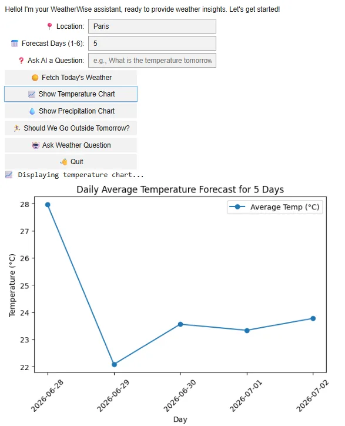

WeatherWise: a weather advisor you can just ask
Live weather data, charts, and rule-based advice wrapped in an interface that answers plain-language questions like "should I go outside tomorrow?"
the grain behind the “tomorrow” fix
rain, wind and temperature
cached so it isn’t repeated
- OpenWeatherMap API
- Response cache
- Matplotlib and ipywidgets
- Plain-language advice

The idea
Weather apps answer the question they were designed for, not the one you actually have. You don't want a wall of numbers. You want to know whether tomorrow is worth going outside for. WeatherWise takes live data and turns it into that answer, through charts, rule-based advice, and questions typed in ordinary English.
How it works
A straightforward data → analysis → output pipeline:
- Retrieve: one call to OpenWeatherMap's 5-day forecast endpoint, which returns readings in 3-hour blocks; the nearest block stands in for current conditions
- Process: group those 3-hourly readings by date into daily temperature and rainfall summaries
- Visualise: chart temperature and precipitation trends with Matplotlib
- Advise: apply rule-based logic to turn the numbers into an actual recommendation
- Converse: parse natural-language questions and answer them from the same processed data
Try it
The notebook's forecast logic, running here in your browser on live data. Same advice thresholds, same question types. The parser is a JavaScript port with a stricter match for the city name. No install, no sign-up, no API key.
Five-day outlook
Live data from Open-Meteo. The Python original uses OpenWeatherMap.
What I contributed
-
The temperature and precipitation visualisations: the charts that make a five-day forecast readable at a glance instead of as a table.
-
Data-caching logic that stores API responses and avoids repeated calls. Public weather APIs are rate-limited, so re-fetching the same forecast on every interaction will eventually break the app.
-
Fixed the "tomorrow" forecast indexing. The API returns 3-hour blocks, not days, so the "tomorrow" lookup was reading the first eight blocks, which are today's, and answering confidently with the wrong day. Stepping a full day of eight blocks forward fixed it.
-
The interactive ipywidgets interface, turning a notebook of function calls into something a non-technical person can use.
How I worked
Know what one row means
WeatherWise answered “tomorrow” confidently and wrongly, because the API returns 3-hour blocks, not days, and the lookup was reading today’s eight. Checking the grain of the data is the first step, not a detail.
What it can’t do
- The question parser matches keywords, not meaning. It looks for words like “rain”, “wind” or “temperature” and “today”, “tomorrow” or “next 3 days”, so a question phrased another way gets no answer.
- The advice thresholds are fixed numbers, such as “scorching” above 32°C, and are not tuned to the city or the season.
- The demo on this page uses Open-Meteo, because OpenWeatherMap needs a private key, so its figures can differ slightly from the notebook’s.
Why it's here
This one is less about statistics and more about the surrounding craft: consuming an external API, reshaping awkwardly formatted data into the grain you need, caching sensibly, and building an interface for someone who isn't you. Those problems show up in analytics work constantly.
Links